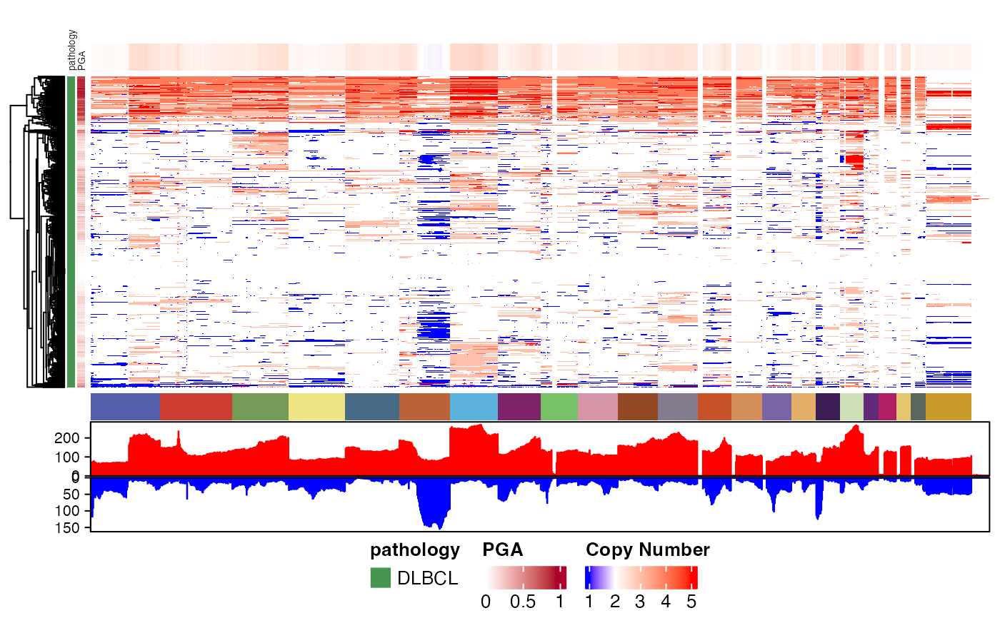
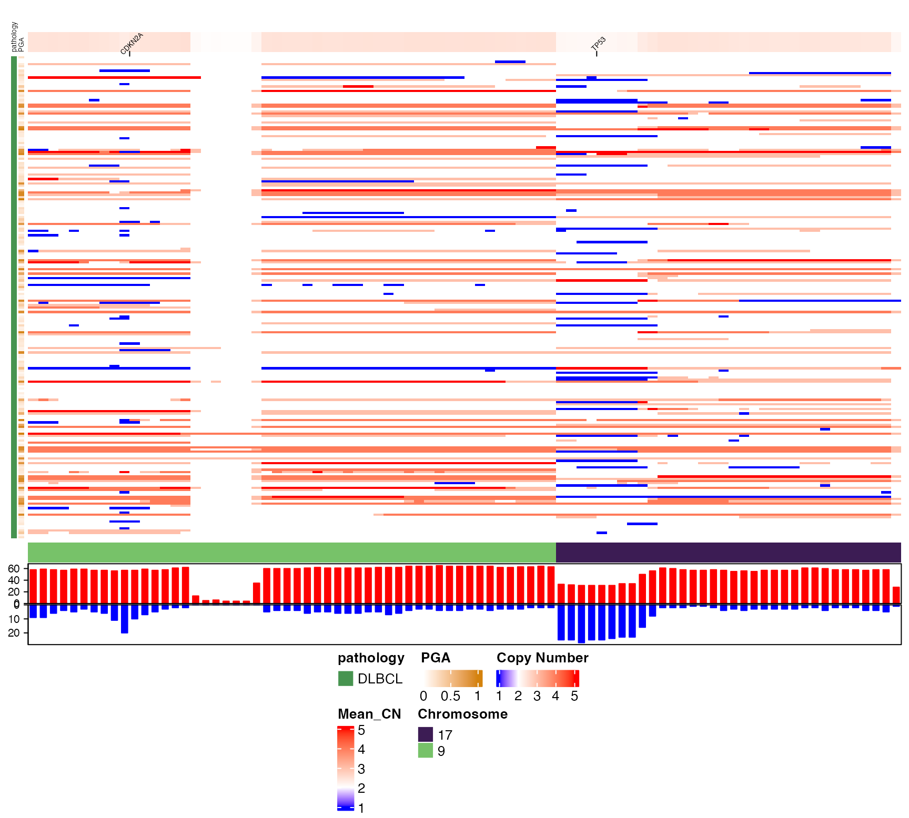

pretty_CN_heatmap.RdPretty Copy Number Heatmap
pretty_CN_heatmap(
cn_state_matrix,
scale_by_sample = FALSE,
these_samples_metadata,
keep_sample_order = FALSE,
metadataColumns = c("pathology"),
expressionColumns,
genome_build = "grch37",
cluster_columns = FALSE,
cluster_rows = TRUE,
show_row_names = FALSE,
show_column_names = FALSE,
keep_these_chromosomes,
hide_these_chromosomes,
keep_these_bins,
hide_annotations,
sortByBins,
sortByGenes,
splitByBinState,
sortByPGA = FALSE,
sortByMetadataColumns,
labelTheseGenes,
labelTheseCytobands,
highlightTheseRegions,
bin_label_fontsize = 5,
bin_label_nudge = 1.03,
bin_label_rotation = 45,
drop_if_PGA_below = 0,
drop_if_PGA_above = 1,
focus_on_these_bins,
geneBoxPlot,
show_bottom_annotation_name = FALSE,
bottom_annotation_name_side = "left",
left_annotation_name_side = "top",
bin_labels,
legend_direction = "horizontal",
legend_position = "bottom",
legend_row = 2,
legend_col = 3,
metadataBarFontsize = 5,
metadataBarHeight = 1.5,
boxplot_orientation = "vertical",
return_data = FALSE,
drop_bin_if_sd_below = 0,
flip = FALSE,
max_CN_allowed = 6,
verbose = FALSE,
rotate = FALSE,
width = 15,
height = 6,
cluster_samples,
cluster_regions
)The output of get_cn_states
Set to TRUE to scale CN values within each sample_id
The output of get_gambl_metadata
FALSE. Set to TRUE to ensure samples are in the same order as in the metadata
One or more columns from the metadata you want to display beside the heatmap
Optional: One or more columns from the metadata that include gene expression values you want shown
Set to TRUE to enable clustering of genomic regions (columns) based on their CN value across all patients in the heatmap
Set to TRUE to enable clustering of genomic regions (columns) based on their CN value across all regions in the heatmap
Set to TRUE to display the ID of every bin (region) shown in the heatmap
Set to TRUE to display the sample_id of every sample shown in the heatmap
A vector of chromosome names to include (all others will be excluded)
A vector of chromosome names to exclude (all others will be included unless keep_these_chromosomes is specified)
A vector of bin names to include (all others will be excluded)
A vector of annotation names to suppress from legends in the plot
Optional: A vector containing one or more names of genomic bins that will be used to order the heatmap rows.
Optional: A single genomic bin that will be used to split the heatmap based on the CN state of that bin
Optional: Sort the rows based on percent genome altered (PGA) instead of the other options
A vector containing one or more names of columns from your metadata that will be used to order the rows overall or within slices (if combined with splitByBinState or geneBoxPlot)
A vector of Hugo gene symbols whose location will be indicated on the top of the heatmap
Font size for the gene labels (default 5)
Increase or decrease this value to shift the gene labels up/down (default 1.03)
Rotate the direction of the bin label. Default is 45.
Lower limit for proportion of genome altered (PGA). Samples below this value will be dropped (default 0)
Upper limit for proportion of genome altered (PGA). Samples above this value will be dropped (default 1)
Mask all regions outside these bins (set CN to 0). Useful for visualizing GISTIC results.
Optional: Specify the Hugo symbol of a single gene to embed box plots adjacent to the heatmap. Expression data for this gene must be present in the metadata in a column of the same name.
set to TRUE to label the bottom annotation tracks with more details
If using show_bottom_annotation_name, set this to "left" or "right" to relocate the names
Which side to put the name of the metadata annotations (top or bottom)
Instead of automatically labeling genes, you can instead explicitly provide a list of labels for any bins in the heatmap. The names of each element should match a bin. The value of each element is the label that will be shown. This option can be used to skip gene location look-ups (see examples).
Which orientation to use for the legend
Where to put the legend
How many rows for the legend layout
How many columns for the legend layout
Either "horizontal" or "vertical" (default: horizontal)
Specify TRUE to get some of the internal data back including the heatmap object
Force bins with standard deviation below this value to be excluded
Optionally, flip the rows/columns of resulting heatmap. Default is FALSE.
Control verbosity of the console output. Default is FALSE.
Set the width of the heatmap. Default is 10.
More intuitive alias for cluster_rows, especially when combining with rotate = TRUE
More intuitive alias for cluster_columns
list (when return_data = TRUE)
suppressMessages(library(dplyr))
#get some metadata for subsetting the data to just one pathology (DLBCL)
dlbcl_genome_meta = suppressMessages(get_gambl_metadata()) %>%
filter(pathology=="DLBCL",
seq_type=="genome")
#remove any duplicate sample_id/seq_type combinations
meta_clean = check_and_clean_metadata(dlbcl_genome_meta,
duplicate_action = "keep_first")
# Create the copy number matrix using the helper functions
all_segments = get_cn_segments(these = meta_clean)
#> dummy segments are not annotated in the inputs
#> fill_missing_with parameter will be ignored
dlbcl_cn_binned = segmented_data_to_cn_matrix(
seg_data = all_segments,
strategy="auto_split",
n_bins_split=1300,
these_samples_metadata = meta_clean)
# Generate a basic genome-wide CN heatmap
pretty_CN_heatmap(cn_state_matrix=dlbcl_cn_binned,
these_samples_metadata = meta_clean,
hide_annotations = "chromosome")
#> Warning: The input is a data frame-like object, convert it to a matrix.

# Disable row (sample) clustering and restrict to a few chromosomes
# and highlight some genes of interest
pretty_CN_heatmap(cn_state_matrix=dlbcl_cn_binned,
these_samples_metadata = meta_clean,
hide_annotations = "chromosomes",
keep_these_chromosomes = c("9","17"),
cluster_rows=F,
labelTheseGenes = c("CDKN2A","TP53"))
#> mapping genes to bins
#> Warning: The input is a data frame-like object, convert it to a matrix.

if (FALSE) { # \dontrun{
# get gene expression data
gene_exp_all = get_gene_expression(all_genes=T,
lazy_join=T,
arbitrarily_pick = T,
HGNC=T,format="wide")
genome_meta_exp = left_join(get_gambl_metadata() %>%
filter(seq_type=="genome") %>%
select(sample_id,pathology,lymphgen),
select(gene_exp_all,-sample_id),
by=c("sample_id"="genome_sample_id")) %>%
filter(!is.na(MYC))
} # }
# Include gene expression data and embed a box plot showing the expression of one gene across different CN states
if (FALSE) { # \dontrun{
pretty_CN_heatmap(cn_state_matrix=all_states_binned,
these_samples_metadata = filter(genome_meta_exp,pathology=="DLBCL"),
hide_annotations = "chromosomes",
cluster_rows=F,
geneBoxPlot = "TP53",
boxplot_orientation="horizontal",bin_label_fontsize = 9,bin_label_nudge = 19
)
} # }